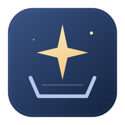

← Back to the organization home page

StarVaultStarVault
AI conversation archive
Your AI memories belong to you.
StarVault is a local-first archive for AI conversations, with incremental backups, attachments and Skill migration through a desktop app, CLI and MCP server. Bring scattered conversations, attachments and Skills into a personal long-term archive for search, review and migration to another computer.
Previously named Chat History Vault. starvault and chat-history-vault commands are both available. Software code is public; chat backups use your own private repository. The latest official release listed here is v0.1.4.
Main features
- Collect local Codex, Claude Code, Claude Desktop, WorkBuddy, OpenClaw and DeepSeek Harness sessions, or import ChatGPT conversations. Claude Desktop support covers locally saved imports of cloud chats and cached Code Projects messages; it does not sign into the cloud to fetch new chats.
- Only conversation text and category indexes sync to a private GitHub repository. Raw messages, attachments, commands and logs stay local. The public software repository contains no chat content; backup sync verifies that its target is private.
- The Rust + egui desktop reader opens the same local backup without a web server. Filter by source, search full text, view project timelines and read Markdown with original local images.
- The CLI handles backup, search, attachment copying and Skill migration. Searching an existing archive requires neither initialization nor a GitHub login.
- MCP reads the same archive as the desktop app and communicates over standard input/output without opening a network port. It provides status, search, paginated reading, attachment and Skill lists, and storage estimates by default. Add
--allow-writeto enable backup and restore. - Images are deduplicated by content SHA-256 and stored locally without compression or upload. Skills are local ZIP snapshots of complete directories and can be restored to a chosen folder. Copy the entire backup folder to migrate text, images and Skills; cloning the text branch on GitHub is not enough.
Requirements: Python 3.9 or later; Git for backups and GitHub authentication for private sync. No third-party Python packages are required at runtime. This is a reading and search archive; the README does not guarantee reimport into the original app or continuation of the same session.
Current version: v0.1.4
The following is based on the published StarVault v0.1.4 release notes. This version improves reading and filtering without modifying original sessions or backend export and import formats.
- Separate columns contain filters, project / session lists and content. Sources show session counts; select common filters directly and remove individual selections.
- A light toolbar and centered, width-limited content. User questions appear in pale gray bubbles, while assistant replies flow continuously, retaining source, time and original-text copying.
- Local message metadata identifies and collapses confirmed Skill, agent collaboration and supporting context. Related tool images and complete original text remain available.
- The software repository root includes
npm run previewandnpm run preview:timelinefor starting a source preview and timeline view.
Supported platforms
- Desktop installer: Apple Silicon macOSThe current release provides StarVault-0.1.4-macos-arm64.zip. The app uses a local ad-hoc signature without Apple Developer signing or notarization.
- Other desktop platformsThe README requires source builds for Intel macOS, Windows and Linux desktop apps; downloadable native installers are not available for these platforms. The macOS build was verified locally; Windows / Linux packaging remains unverified.
- CLI / MCP: macOS and LinuxThe formula below matches the organization home page. On Windows, follow the README to install the CLI in a source virtual environment; there is no separate Windows installer.
The Python backend passed temporary-data CI regressions on macOS / Windows / Linux. According to the README, reading real source-app data has only been verified locally on macOS. Real MCP client integration on Windows / Linux is unverified.
Install
As on the organization home page, the desktop cask includes the CLI and Python backend:
brew install --cask stardreamtech/tap/starvault
# CLI / MCP only brew install stardreamtech/tap/starvault
The project README also documents the personal tap: first brew tap cpython666/tap, then brew install starvault (CLI / MCP on macOS / Linux) or brew install --cask starvault (desktop app on Apple Silicon macOS). Copyable commands here use stardreamtech/tap, matching the organization home page.
Files in the v0.1.4 release:
- StarVault-0.1.4-macos-arm64.zip Apple Silicon macOS desktop app
- StarVault-0.1.4-source.tar.gz Source archive, not a desktop installer
If macOS blocks launch, the README recommends verifying the source and SHA256 first, then following System Settings → Privacy & Security to allow opening. Releases contain only software and fixed assets, without chat data or local configuration.
Based on starvault README, v0.1.4 Release and the organization home page. This page does not claim features or platforms absent from those sources.